-
인테리어
60년 된 한옥의 담백한 개조기
딸이 이뤄준 어머니의 꿈
월간 전원속의 내집 | 매거진 |2022-01-24 10:13
- 처음엔 보이지 않았던 것들이 다시 보면 보일 때가 있다. 긴 세월 함께 한 시골집을 오래 곁에 두고 싶은 어머니의 애틋한 마음이 딸에게 전해진 순간, 옛집이 변하기 시작했다.
-
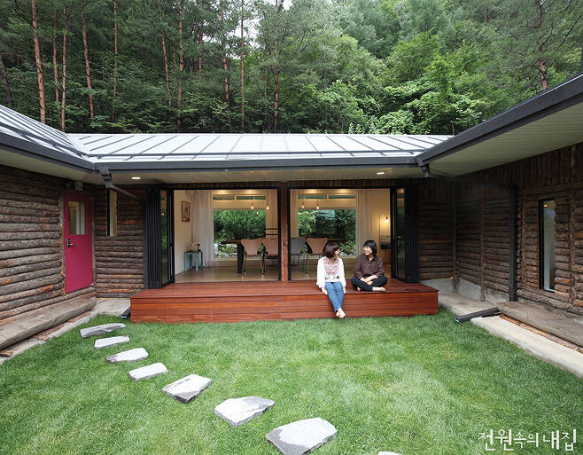
안마당 데크에 앉아 이야기를 나누는 모녀
-
산 아래 투박한 통나무 옷을 입은 작은 한옥. 어머니는 이 소박한 시골집을 참 좋아하셨다. 30년 전 처음 마주했을 때도 이미 긴 세월을 보내 많이 낡은 상태의 집이었지만, 그래도 숲 가까운 조용한 땅에 자신만의 공간이 생긴 것이 마냥 기뻤고 이곳에 찾아와 보내는 시간이 따뜻하고 소중했다는 어머니다.
워낙 여기저기 허술한 곳이 많아 조금씩 닿은 손길로 그나마 유지해왔던 집인데, 최근 몇년간 부쩍 노화가 심해지며 여러 가지 불편함이 찾아왔다. 때문에 어머니도 예전만큼 이 집을 자주 오가지 못했고, 한동안 방치된 상태로 둘 수밖에 없었다. 하지만, 그렇다고 당장 집을 내놓지는 않았다. ‘언젠가 여유가 생기면 집을 예쁘게 고쳐 주말마다 함께 어울리면 좋겠다’며, 상상만으로도 너무 좋다 하셨던 어머니의 바람 때문이었다.
그러던 중, 작년 가을 강릉시에서 시행한 ‘석면 지붕 무료 철거 사업 지원’을 받을 기회가 찾아왔다. 당시 지붕 교체 공사를 시작하려고 마음먹을 때만 해도, 그저 ‘해로운 석면 지붕을 이 기회에 철거하고 튼튼한 새 지붕으로 바꿔 놓기만 하면 되는 거지’라고 생각했었다는 큰딸은, 공사 전 조금 자세히 집 상태를 둘러보고자 몇 차례 이곳을 방문했다고 한다. 집이 어머니의 품에 온지 30년이 지나서야 처음으로 곳곳을 찬찬히 살펴보게 된 것이다.
“허름하기만 하고, 불편하고 낡아 쓸모 없다 생각했던 집이, 보면 볼수록 왠지 소박하지만 정감이 가고, 구석구석 엄마의 흔적이 남아 있어 따스하고 좋아 보이더라고요.” -
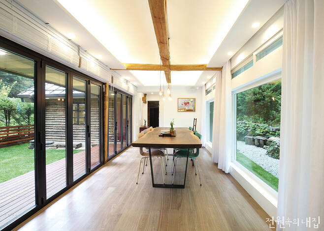
‘ㄷ’자 형태의 집에서 거실의 역할을 하는 이곳은 가족이 모여 담소를 즐기기에 안성맞춤이다.
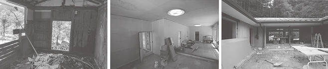
• Before
60년이라는 긴 세월동안 집이 어떤 과정을 거쳤는지는 철거를 하면서 알 수 있었다. 전형적인 틀을 갖춘 전통 한옥은 아니었지만 처음엔 본채와 외양간 두 채의 집이었다가, 누군가에 의해 두 채의 집이 한 채로 합쳐지면서 내부 천장과 벽을 만들고 화장실을 만드는 등 현대식 집으로 개조를 했다. 그 뒤 한 번 더 마감을 덧대어 수리한 흔적이 보였다. 사람이 항상 거주하지 않다보니 보안을 걱정해서인지, 앞마당 쪽으로 난 문을 모두 막아 집의 뒷모습을 보며 뒷마당을 통해 안으로 돌아 들어가는 어색한 구조가 되어 있었다. 내부 역시 사용하기 불편한 동선과 부족한 수납공간, 좋지 않은 채광, 부실한 단열 등 많은 문제점을 안고 있었다.
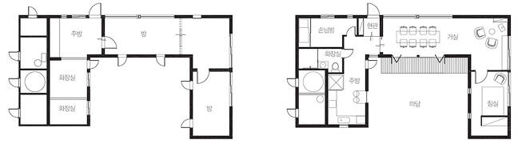
PLAN - BEFORE / PLAN - AFTER (59.74㎡)
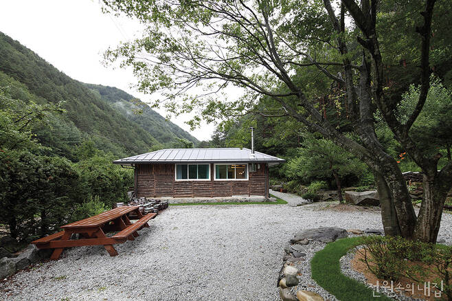
그동안 주출입구로 사용되었던 뒷마당 쪽 모습. 구옥의 통나무 외벽은 단열 마감 후 재시공하여 옛집의 분위기를 그대로 느낄 수 있게 했다.
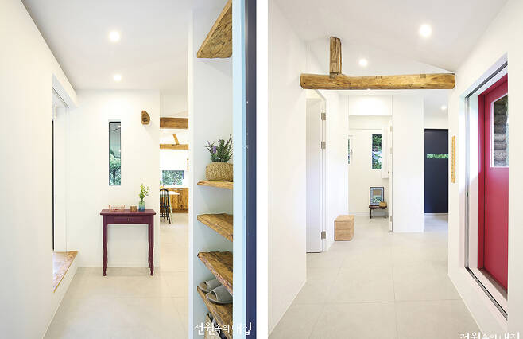
현관에서 바라본 공간 / 덧대어진 마감재를 걷어내고 채광을 고려한 창을 곳곳에 내었더니 어두웠던 내부가 환하게 변신하였다.
-
어머니가 오랫동안 좋아하셨고 긴 시간의 손때가 묻어 있는 이 낡은 집을 한번 고쳐보면 어떨까라는 생각이 든 것도 그때쯤이었다. 결심이 서고, 딸은 가족들에게 자신의 뜻을 전했지만 예상대로 모두 반대했다. 무조건 허락하실 것 같던 어머니마저도 공들인 만큼 결과물이 나오지 않을까 걱정이라며 주저하셨다. 딸의 의지가 확고 했기에 결국 반신반의하며 동의해주었으나, 설득 그 이상으로 힘든 일이 또 남아 있었다. 바로 ‘이 집을 누구에게 맡겨 고칠 것인가’였다.
오랫동안 차근차근 준비한 결정도 아니었고, 주변에 이에 대해 잘 아는 사람도 없다 보니 하루하루가 고민의 연속이었다. 예산도 넉넉하지 않아 상황을 듣자마자 딱 잘라 못한다는 업체가 대다수였고, 심지어 그 비용으로 리모델링할 생각이면, 허물고 새로 지으라는 업체도 있었다. 몇 달 동안 ‘안 된다, 못 한다’는 말만 반복적으로 듣게 되면서, 딸은 자포자기 상태가 되어갔다.
“근처 업체만 알아볼게 아니라, 혹시 먼 곳이지만 여기에 와서 집을 고쳐줄 업체가 있지 않을까 하고, 마지막으로 인터넷을 찾아보기 시작했어요. 딱 마음에 드는 집을 보게 되었는데, 과연 이 업체가 해줄 수 있을지가 관건이었죠.”
기대 반, 걱정 반으로 딸은 전화를 걸었다. 조마조마 했던 마음이 무색할 만큼, 수화기 너머에서는 그토록 듣고 싶었던 “한번 해봐요!”라는 긍정의 대답이 들려왔다. 그렇게 모루초디자인의 박선은 대표와 만났고, 여러 번의 미팅을 통해 어떤 방향으로 리모델링을 진행할지 충분히 의견을 나눠 문제점을 풀어나갔다. 일단 예산 등을 고려해 거칠지만 소박한 시골집 분위기가 잘 느껴지는 통나무 외벽만큼은 그대로 유지하기로 하고, 대신 내부에 중점을 두어 가족이 자주 모일 수 있는 공간이 되었으면 좋겠다는 바람을 전했다. 그리고 두 달이라는 충분한 설계 과정을 거쳐, 드디어 공사에 들어가게 되었다. -
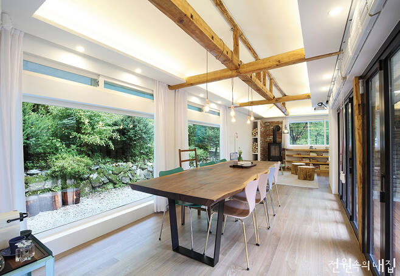
좁고 긴 형태였던 방이 여러 사람이 모여 이야기를 나눌 수 있는 넓은 거실이 되었다.
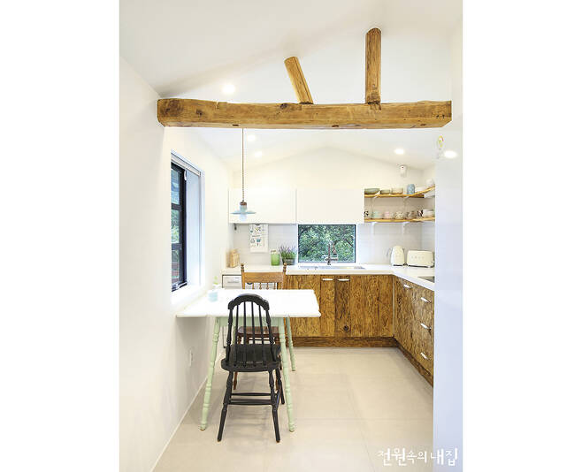
어머니가 주로 머무는 주방. 어머니는 채광창을 통해 보이는 바깥 풍경이 너무 운치있다며, 가장 마음에 드는 공간으로 꼽으신다.
-
오랜 세월을 거친 옛집을 수리하는 것은 여간 힘든 일이 아니다. 집이 워낙 낡아 철거를 할 때도 구조보강을 해가며 진행해야 했다. 제 기능을 못하는 기둥들은 잘라 교체하고, 바닥 또한 단열 보 강 및 수평 모르타르로 평평하게 다진 후 마감재를 덧대었다.
“부실공사로 허술하게 지어진 부분들이 많아 보강 작업이 추가되었어요. 그러는 바람에 공사 기간과 비용이 늘어났지만 집의 안전과 관계된 것이고, 언젠가는 반드시 손을 봐야 하는 부분들이었기 때문에 큰 걸림돌은 되지 않았죠.”
이 기회에 외관상 예쁘기만 한 집이 아니라, 훨씬 더 튼튼하고 건강한 집을 갖게 되어 가족 모두 다행스럽게 생각하고 있다고 한다.
‘반전 매력이 있는 집’이라고 소개할 만큼, 고쳐진 집의 안팎 분위기는 많이 다르다. 외부가 예전 모습을 간직하고 있다면, 내부는 현재에 맞춰 변신했다. 작은 집이지만 어느 장소에서나 바깥 경치를 바라볼 수 있어 답답하지 않고, 흙 단열재를 걷어내면서 함께 철거된 고재는 싱크대와 현관 선반 등으로 재탄생해 여전히 이 집의 요소로 자리 잡았다. 또한 계절 따라 변하는 풍경이 아름다운 만큼, 그동안 소외되었던 앞마당을 살리고자 마당 쪽으로 작은 창과 폴딩도어를 설치해 문을 닫았을 때는 툇마루처럼, 문을 열었을 때는 테라스처럼 사용할 수 있도록 배려했다. -
HOUSE PLAN
대지위치 : 강원도 강릉시 / 대지면적 : 495㎡(149.73평) / 건물규모 : 지상 1층
건축면적 : 59.74㎡(18.07평) / 연면적 : 59.74㎡(18.07평)
건폐율 : 12.1% / 용적률 : 12.1%
지붕마감재 : 징크 / 단열재 : 열반사단열재 10T + 기존 목조벽체 + 열반사단열재 10T(내·외단열)
외벽마감재 : 기존 통나무 재설치 + 고벽돌 타일 / 창호재 : 자체 제작
설계 및 시공 : 모루초디자인 070-8860-9323 | www.morucho.com -
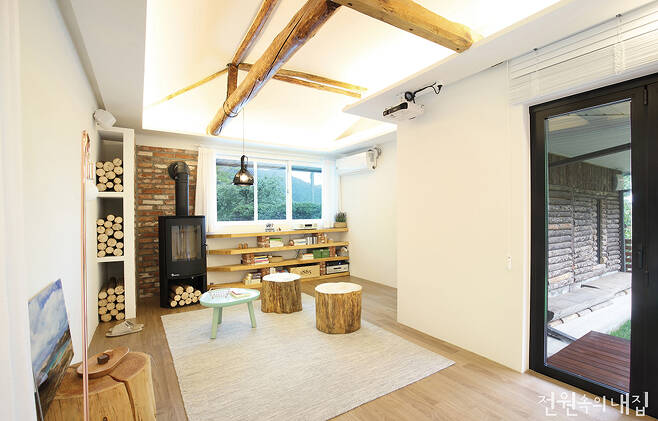
거실 한켠에 놓인 통나무 의자 또한 철거 때 나온 고재를 다듬어 제작한 것이다.
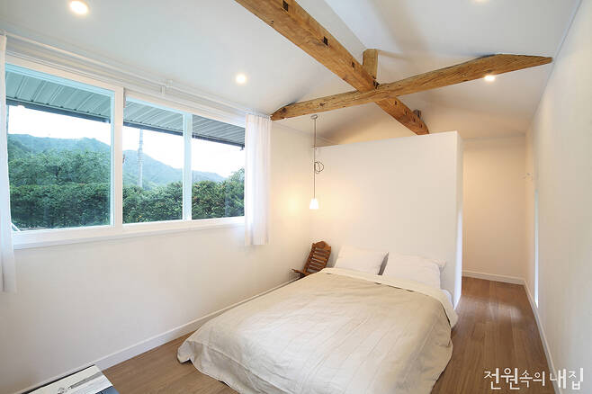
아늑한 침실. 침대 뒤쪽으로 가벽을 두어 수납 공간을 마련했다.
Space Point
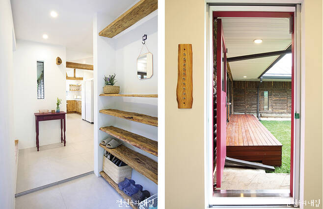
현관 우측 선반은 구옥에서 나온 고재를 다듬어 제작했다. 덕분에 세월의 흔적이 담긴 공간이 연출되었다.
주방으로 가는 길목에는 마당으로 나갈 수 있는 문을 두었다. 벽면에 설치된 전등 스위치가 눈길을 끈다.
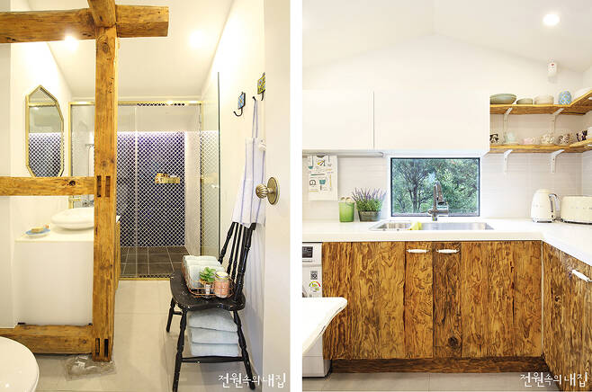
작은 공간이지만 답답함이 느껴지지 않도록 신경을 쓴 욕실. 파란 타일이 공간을 더욱 풍성하게 만든다.
디자이너의 감각으로 완성된 세상에 하나뿐인 싱크대. 현관 선반과 마찬가지로 고재를 재사용했다.

옛 한옥의 요소들은 현재 집에 어울릴 수 있도록 조금씩 손 봐 여전히 이 집의 한 부분으로 자리 잡았다.
침실 안쪽에 놓인 숨은 공간. 침대 헤드 뒤로 가벽을 세워 반대편에는 수납 용도로 활용해주었다.
-
INTERIOR
내벽마감재 : 삼화 친환경 수성페인트, 대우벽지(방 2칸만 도배)
바닥재 : LIEU DESIGN _A SERIES / 욕실 및 주방 타일 : 윤현상재 수입타일
수전 등 욕실기기 : 아메리칸스탠다드, 대림도기 / 주방가구 : 모루초디자인 제작
조명 : 메가룩스(거실 샹들리에 모루초디자인 연출) / 현관문 및 방문 : 모루초디자인 제작
붙박이장 : 모루초디자인 제작 / 데크재 : 방킬라이 -

깊은 산속 작은 산장 같은 집 / 양쪽으로 놓인 창 덕분에 집과 자연이 서로 소통하며 하나가 된 느낌이다.
-
“리모델링을 택한 대부분의 건축주가 그러하듯, 이곳 건축주 또한 ‘뭣 하러 낡은 집에 돈을 들이느냐’는 말을 숱하게 들었을 거예요. 건축주 스스로 그 답을 찾을 수 없다면 그야말로 새집을 짓는 게 훨씬 나을 수도 있겠죠. 단순히 예산 문제가 아닌 것 같아요. 집을 고쳐 쓰고 싶은 이유가 분명하다면 꼭 새집만이 정답은 아니에요.”
공사 과정 중에도 고민해야 할 일들이 많아 여러모로 힘들기도 했지만, 박선은 대표의 말처럼 고칠 이유가 분명히 있었기에 돌이켜보면 이 또한 추억으로 남는다.
밖에서 보이는 모습보다 집 안에 앉아 밖을 내다 볼 때의 그 풍경, 그 마음은 말로 설명할 수가 없다는 모녀. 어머니를 위해 시작한 일이지만, 고쳐진 집은 가족 모두에게 큰 선물이 되었다. 어머니에게 보이지 않는 위로와 감동을 주었던 시골집에는 이제 두고두고 간직하고 싶은 가족의 기억과 추억이 쌓여갈 것이다.
건축주가 전해온
리모델링을 위한 조언
꼭 본인이 원하는 바를 정확히 알고, 확신이 있을 때 시작하길 바란다. 특히 별로 가치 있어 보이지 않는 낡은 집을 리모델링하려면 주변에서 만류도 심하고, 공사과정 중 예상치 못한 변수가 많이 생겨 건축주 자신도 혹시라도 괜히 시작했나 하는 후회를 할 수도 있다. 리모델링에 꼭 포함시켜야 할 중요하게 여기는 항목과 과감히 포기해야 하는 것에 대해서도 명확한 본인의 생각이 있어야 할 것 같다. 나의 경우는 리모델링의 목적과 원하는 바가 분명했기 때문에, 결과물에 대한 확신도 있었고 주변의 걱정에 크게 동요되지 않았다.
마지막으로 제일 중요한 건 신축할 때와 마찬가지로, 본인이 원하는 방향과 뜻이 잘 맞는 업체를 찾는 일이다. 하지만 낡은 시골 주택 리모델링을 기꺼이 맡아서 하겠다는 업체가 생각보다 많지는 않은 것이 사실이다. 그래도 결심했다면 시간이 많이 걸리더라도 포기하지 않고, 꼼꼼히 여러 곳에서 잘 수소문해서 찾아본다. 그러면 어느 날 우연처럼 리모델링의 꿈을 실현시켜 줄 좋은 업체를 만날 수 있을 것이다.